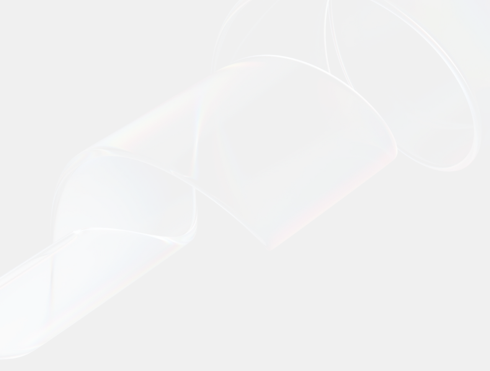
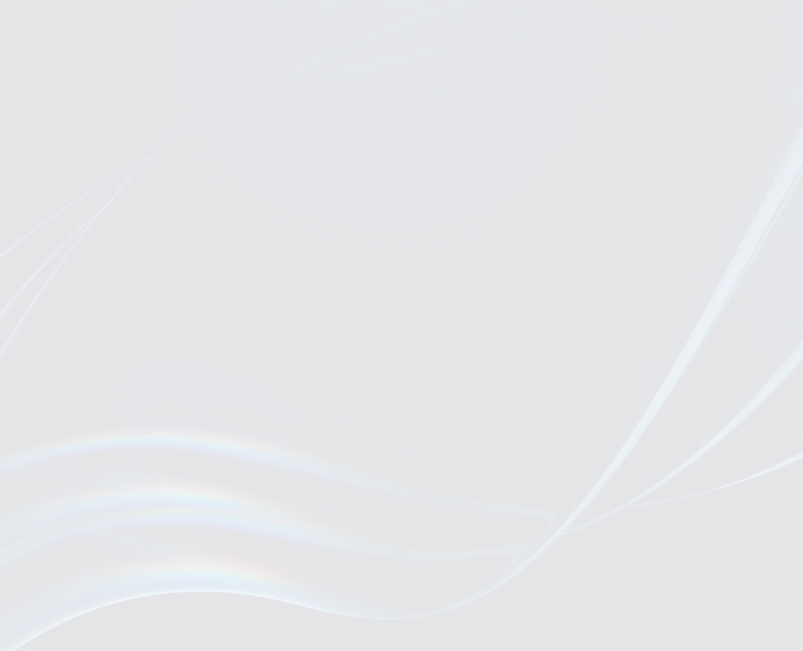

Designing With Awal Mula Studio
Launch-Ready Company Profile in Just 2 Weeks.
Achieve your vision with us — stunning designs, dream results, and affordable prices.
- UI/UX Design
- Prototype
- Company Profile
- Landing Page
- Illustration
- Mobile Design

Who Are We?
Awal Mula Studio is a UI/UX design team based in Jakarta, Indonesia. Formed by two designers with a strong passion for user experience and interface design, we currently work at one of the largest banks in Indonesia 🤫
6+Years Experience
MaulanaMalik
Our Services.
Designs on demand, delivered your way